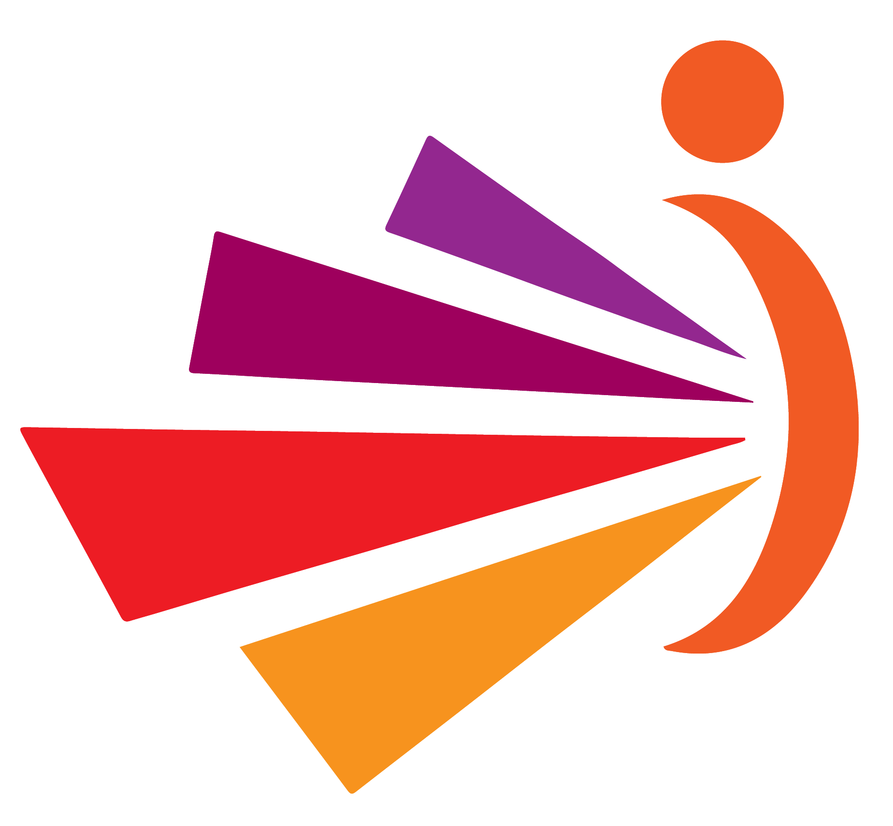

Founder of I See Counseling Over 15 years of experience in Mental health and Personal Development
Canada, Lebanon and the MENA region. Multicultural, Multilingual.

Certified Master Practitioner in Neuro Linguistic Programming-counseling approach - Canada